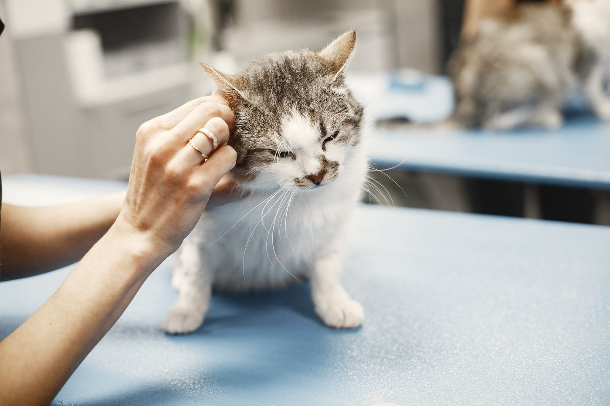

Volunteer Veterinary Hospital
A veterinary hospital in Knoxville serving Knoxville and Maryville since 1996, for dogs, cats, ferrets, rabbits, and pocket pets.
About
Volunteer Veterinary Hospital is a veterinary hospital at 3411 Ginn Farm Dr in Knoxville, Tennessee, serving Knoxville and Maryville since 1996. Dogs, cats, ferrets, rabbits, and pocket pets are welcome. The own site volvethosp.com is a thin single page, so it is not linked as a full site.
Services
Wellness programs
Wellness programs for puppies, kittens, adults, seniors, and pocket pets.
Dental care
Dental care for pets.
Dermatology
Dermatology for skin conditions.
Surgery
Soft tissue and orthopedic surgery.
Diagnostics
An advanced in-house lab, digital X-ray, and ultrasound.
Boarding, bathing, and grooming
Boarding, bathing, and grooming.
Gallery


All gallery photos are stock photos, labeled as such. They show the kind of work and setting described on this page, not this business.
Visit
Contact
Call +1 865-609-0311 Email volunteerveterinaryhospital@gmail.com
Volunteer Veterinary Hospital serves Knoxville, TN. Questions? Call +1 865-609-0311.